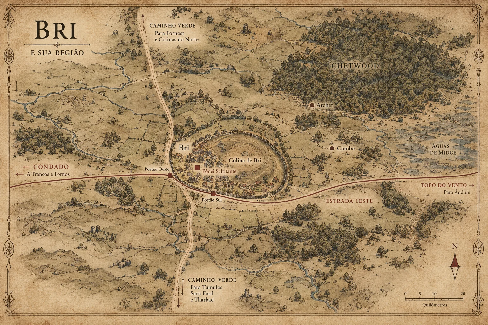
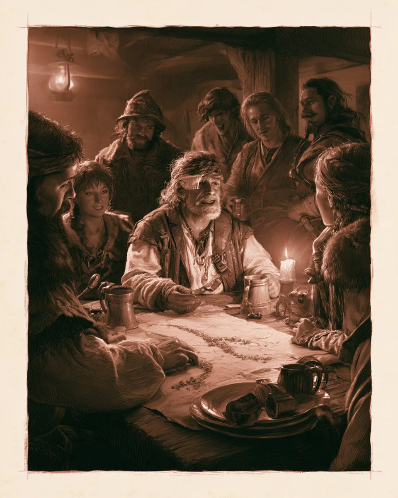
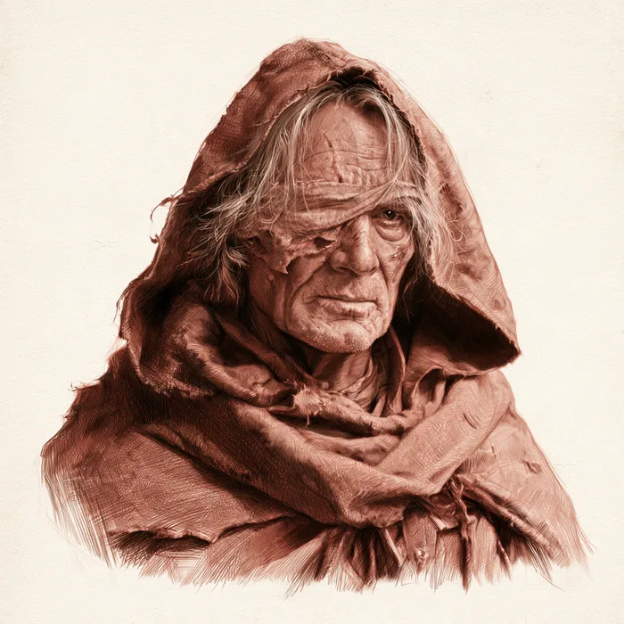
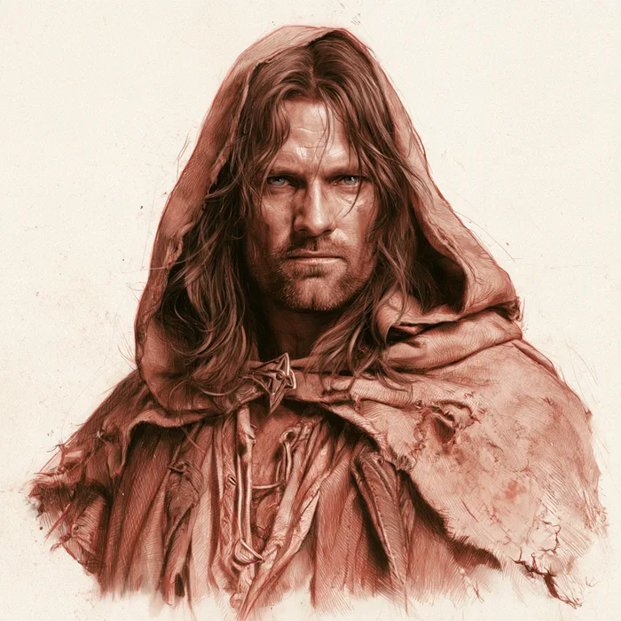
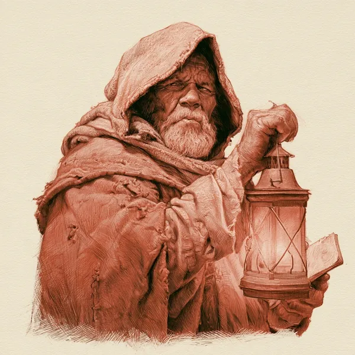
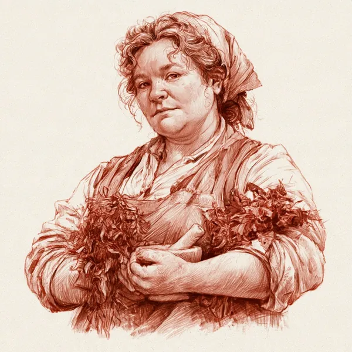
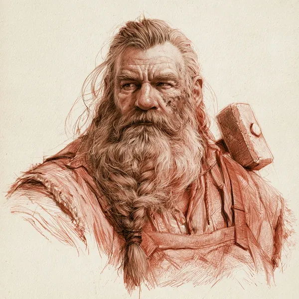
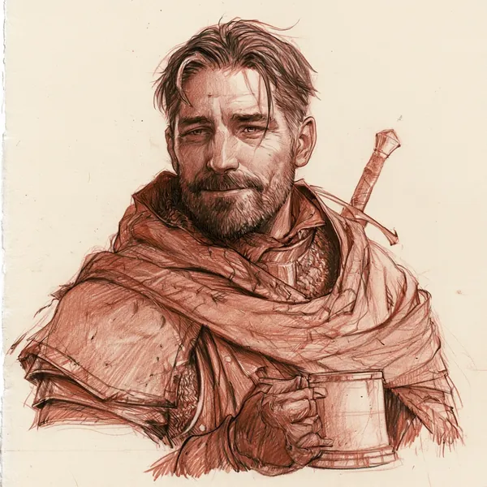

Bri A vila na encruzilhada
Homens e Hobbits sob o mesmo céu, uma estalagem que ouve tudo, e o ermo começando logo depois da cerca viva.
Uma ilha no meio das Terras Ermas
Bri é a maior de quatro aldeias agrupadas em volta de uma colina, no ponto onde a Estrada Leste, que vem do Condado e segue para as montanhas, cruza o velho Caminho Verde, que um dia ligou os reinos do norte e do sul. Em volta, por dias de viagem em qualquer direção, só há ruína, charneca e mato. Por isso Bri parece maior do que é: é o único lugar em muito tempo onde um viajante encontra cama, cerveja, notícia e gente que não fecha a porta na cara dele.
É também a base da Companhia do Starter Set e o refúgio mais natural para qualquer campanha em Eriador. Esta página serve aos dois lados da mesa: o jogador que quer saber onde o herói mora, e o Mestre que precisa de ganchos, rostos e rumores.
| Onde fica | A leste do Condado, a oeste do Topo do Vento, no cruzamento da Estrada Leste com o Caminho Verde. |
| Quem vive | Homens de Bri, na maioria na aldeia de Bri; Hobbits em todas as quatro aldeias, sobretudo em Staddle. |
| Quem manda | Ninguém de fora. O povo de Bri não tem senhor nem rei e se orgulha disso. As decisões ficam com as famílias antigas e o bom senso da vizinhança. |
| Quem protege | Os Rangers, sem que a maioria perceba. O que Bri enxerga é só o Fosso, a cerca viva e os portões fechados à noite. |
| O coração | O Pônei Saltitante, a estalagem onde as quatro aldeias se encontram e onde todo viajante acaba parando. |
Nomes. Usamos as formas das traduções brasileiras quando elas são conhecidas (Bri, Pônei Saltitante, Passolargo, Topo do Vento, Colinas dos Túmulos) e mantemos o original quando não há forma consagrada (Staddle, Combe, Archet, Chetwood).
Os que sempre estiveram aqui
Os Homens de Bri dizem que são os primeiros. E têm razão: descendem dos Homens que chegaram ao oeste da Terra-média antes de qualquer reino, e sobreviveram a todas as guerras dos Dias Antigos. Quando os Reis vieram do Mar, já os encontraram ali. Quando os Reis caíram, eles continuaram ali. Hoje quase ninguém em Bri lembra dos Reis a não ser em canções e ditados que perderam o sentido.
Sob Arnor e depois dele
Por séculos, Bri foi uma vila de estrada no reino do norte, primeiro Arnor e depois Arthedain, com Fornost a poucos dias de marcha ao norte pelo Caminho Verde. O tráfego era grande: mensageiros, comerciantes, soldados. Quando Fornost caiu diante de Angmar e o reino do norte acabou, a estrada esvaziou, mas Bri não. Continuou de pé, menor, mais fechada, contando com a sorte e com os estranhos homens de cinza que passavam de vez em quando.
Os Hobbits de Bri
A Terra de Bri tem Hobbits há mais tempo do que o próprio Condado. Foi de Bri que partiram, no ano 1601 da Terceira Era, os irmãos Marcho e Blanco, com o grupo que atravessou o Brandevin e fundou o Condado. Os que ficaram nunca se sentiram menos Hobbits por isso, e os de Bri ainda insistem, contra toda opinião do Condado, que foram eles os primeiros a fumar erva-de-cachimbo.
Invernos lembrados
A memória viva de Bri gira em torno de um inverno: o Inverno Cruel de 2911, quando o Brandevin congelou e lobos brancos desceram do norte para Eriador. Os mais velhos da vila eram crianças e ainda falam dele à lareira. Os mais jovens cresceram ouvindo que, se os lobos voltarem, é bom que alguém esteja vigiando.
O ponto a transmitir é a continuidade: Bri viu reinos nascerem e morrerem e acha que vai ver o próximo passar também. Isso dá ao povo uma calma que irrita heróis apressados, e uma teimosia que pode salvar a vila quando a Sombra chegar. Use isso nos Conselhos: o povo de Bri não se impressiona com títulos, mas respeita quem ajuda sem pedir nada.
A colina, o fosso e as quatro aldeias
A Terra de Bri é pequena: um punhado de campos, bosques e casas em volta da Colina de Bri, com matas a leste e charneca em todas as outras direções. Dá para atravessá-la a pé em um dia.

Bri
A maior aldeia, nas encostas oeste da colina. As casas dos Homens são de pedra e ficam embaixo, perto da Estrada; as tocas dos Hobbits sobem a encosta. É onde está o Pônei Saltitante e onde a Estrada entra e sai por dois portões.
Staddle
Do outro lado da colina, a sudeste. Quase só Hobbits, em tocas e casinhas baixas. É a aldeia mais calma e a que menos gosta de estranhos.
Combe
Num vale fundo um pouco mais a leste. Pequena, escondida, com gente que vive da lavoura e das árvores.
Archet
Na orla do Chetwood, a mais afastada. Lenhadores, caçadores, e a primeira a ouvir o que vem da mata.
O Fosso, a cerca e os portões
Um fosso fundo, com uma cerca viva espessa do lado de dentro, corre em meio arco a oeste da aldeia de Bri, saindo da colina e voltando a ela. A Estrada atravessa o fosso por um Portão Oeste e sai por um Portão Sul. Os portões têm guardiões e fecham ao anoitecer; quem chega depois precisa bater, dizer o nome e explicar o que quer. Não é uma muralha e não aguentaria um exército, mas deixa claro para todo viajante que ali começa um lugar com dono.
O que fica em volta
| Direção | O que há |
|---|---|
| Oeste | A Estrada Leste até a Ponte do Brandevin e o Condado. Ao sul da estrada, as Colinas dos Túmulos e, além delas, a Floresta Velha. Nenhum povo de Bri anda por ali se puder evitar. |
| Leste | O Chetwood, os pântanos de Midgewater e depois terra vazia até o Topo do Vento, as Terras Solitárias e, muito além, Valfenda. |
| Norte | O Caminho Verde, tomado de mato, rumo às ruínas de Fornost e às Colinas do Norte. É a rota da aventura Over Hill and Under Hill. |
| Sul | O Caminho Verde descendo pela beira das Colinas dos Túmulos, as ruínas de Wyncross, o vau de Sarn e, muito ao sul, Tharbad. |
No Starter Set, o Caminho Verde ao norte de Bri já conta como Terra Selvagem, com o bônus de estrada, e as Colinas do Norte como Terra Sombria. Sugerimos tratar a própria Terra de Bri e a Estrada Leste até o Brandevin como Terra de Fronteira. Tudo que fica além de um dia de marcha já é ermo.
Onde as quatro aldeias se encontram

A placa mostra um pônei branco e gordo empinado nas patas de trás. Embaixo dela está a maior estalagem de Eriador fora das terras dos Elfos, e o único lugar onde gente das quatro aldeias, Hobbits e Homens, se senta junta toda noite. Os ociosos, os falantes e os curiosos da Terra de Bri vêm beber e trocar notícia; os Rangers e outros andarilhos vêm descansar; os Anões que ainda usam a Estrada Leste param aqui na ida e na volta.
O prédio forma um pátio aberto para a Estrada. Uma das alas corre para trás e entra na encosta da colina, de modo que os quartos do segundo andar, lá no fundo, ficam no nível do chão. Há estábulos, um grande salão comum com lareira, salinhas particulares para quem quer conversar sem plateia e, numa ala, quartos no térreo com janelas redondas, feitos na medida dos Hobbits.
O que o Pônei oferece
| Cama e comida | Quartos para Homens e para Hobbits, comida farta e simples, a melhor cerveja de Eriador. Um herói de padrão de vida Comum paga sem problema. |
| Estábulo | Guarda de pôneis e cavalos, e às vezes algum animal à venda, raramente bom. |
| Notícias | Tudo que passa pela Estrada é contado no salão comum. Metade é exagero, um quarto é mentira, o resto é ouro. |
| Privacidade | As salinhas particulares. É onde Gilraen marcou o encontro com Rupert no Starter Set, e onde qualquer Conselho importante na vila deveria acontecer. |
O Pônei é da família Butterbur (Carrapicho nas traduções brasileiras). Em 3018, quando os Hobbits do Condado chegam a Bri, o estalajadeiro é Barliman, gordo, careca, esquecido e de bom coração. Em 2965, cinquenta e três anos antes, o cânone não diz quem está atrás do balcão. Duas boas opções: um Barliman jovem, recém-chegado ao comando da casa e ansioso para agradar; ou o pai dele, mais velho e mais sério, com o jovem Barliman correndo entre as mesas. Escolha uma e mantenha.
De ninguém, a não ser deles mesmos
Os Homens de Bri
Cabelo castanho, largos e mais para baixos, alegres e independentes. Não pertencem a nenhum senhor e não têm vergonha de dizer isso. Por viverem num cruzamento, são mais à vontade com Hobbits, Anões e Elfos do que qualquer outro povo de Homens: é por isso que um Homem de Bri na Companhia sobe o valor de Fellowship em 1 (a Bênção Cultural Sangue de Bri). Podem parecer simples, mas quem os subestima costuma sair do negócio com menos do que entrou.
Famílias típicas: Butterbur, Appledore, Ferny, Goatleaf, Heathertoes, Mugwort, Thistlewool, Rushlight, Pickthorn. Nomes: Alfred, Bob, Harry, Nob, Percy, Tom; Daisy, Fern, Lily, Poppy, Rose, Tilly.
Os Hobbits de Bri
Mais viajados que os do Condado, ou pelo menos mais acostumados a ver gente estranha passar na porta. Falam da Estrada com naturalidade e acham os parentes do outro lado do Brandevin um pouco caipiras. Os do Condado, claro, acham o contrário.
Famílias típicas: Underhill, Brockhouse, Tunnelly, Longholes, Sandheaver.
Os de Fora
Bri chama de de Fora todo mundo que não é da Terra de Bri, inclusive os Hobbits do Condado. Não é hostilidade, é classificação. Anões são bem-vindos porque pagam e vão embora. Elfos são raros e recebidos com um silêncio curioso. E os Rangers são vistos com desconfiança: homens altos, calados, de roupas gastas, que chegam de lugar nenhum e nunca dizem o nome. Bri não sabe que dorme tranquila por causa deles.
Fale devagar, com ditados antigos e curiosidade sem pressa. Todo mundo quer saber de onde o herói veio e para onde vai, e cada resposta vai correr as quatro aldeias até o dia seguinte. Um herói que cumprimenta, paga a rodada e escuta ganha a vila; um que chega exigindo ganha só o preço de estranho.
Quem a Companhia vai encontrar
Rupert e Passolargo vêm do Starter Set; Drustan, do suplemento Ruins of the Lost Realm. Os demais são personagens originais deste site, criados com nomes das listas do livro básico.

Velho, manco, com um olho enfaixado. Caça nas Colinas do Norte há mais tempo do que qualquer um em Bri e foi ele quem trouxe a história que abre Over Hill and Under Hill. Depois da aventura, vira um contato fiel: sabe trilhas, sabe quem mente sobre caça, e paga bebida para quem salvou a gente de Cránn.
"Não me peçam para voltar àquelas pedras."

A gente de Bri conhece o nome e a figura: aparece no Pônei de tempos em tempos, senta num canto escuro, fuma, escuta e vai embora. É Aragorn, filho de Gilraen, mas quase ninguém sabe. Em 2965 ainda é jovem e passa longas temporadas no sul. Use-o com parcimônia: uma presença no canto do salão vale mais do que um aliado na mesa.

Guarda o Portão Oeste há trinta anos e acha que conhece todo rosto que passa por ali. Desconfiado com quem chega de noite, falador com quem chega de dia. Anota nomes num caderno que ninguém nunca leu. Se a Companhia quiser saber quem entrou em Bri na última semana, é por ele que começa, e ele vai querer saber por quê.
"Nome, de onde vem e o que quer em Bri. Nessa ordem."

Parteira, erveira e a pessoa que Staddle chama quando alguém se machuca. Tem opiniões fortes sobre aventureiros que voltam com ferimentos mal tratados. Para a Companhia, é o lugar de sarar entre uma aventura e outra, e uma fonte de rumores de Staddle, que ouve pouco mas ouve certo.
"Quem amarrou isso? Um Anão? Senta aí."

Todo outono, a caminho das Montanhas Azuis, monta forja por uma semana no pátio do Pônei. Conserta armas, reforça escudos, fala pouco e cobra caro. É um bom motivo narrativo para um herói ganhar uma Recompensa (Reinforced, Cunning Make) e um bom portador de notícias do leste: ele passou por Valfenda, ou diz que passou.
Um rosto para vigiar

Homem de sangue de Gondor, bom viajante, bom rastreador, bom de espada. Frequenta o Pônei e a estalagem da ponte em Tharbad. Paga rodadas, conta histórias do sul e pergunta, sem parecer perguntar, por um velho de chapéu cinzento que visita o Condado. Serve a Saruman, e sua tarefa é vigiar o Condado atrás de notícias de Gandalf. Acha que o fim do mundo está perto e quer aproveitar o que resta. Não é um vilão para ser derrotado no primeiro encontro, e sim uma presença que a Companhia vai reencontrar.
A Fase da Companhia em Bri
O livro básico aponta Bri como a escolha ideal de refúgio inicial em Eriador: fica no cruzamento das estradas, todo viajante para no Pônei, e a Companhia pode partir em qualquer direção. É onde os heróis voltam depois de cada aventura para a Fase da Companhia.
| O herói quer | Em Bri |
|---|---|
| Descansar e se recuperar | Cama no Pônei ou na casa de um conhecido. Poppy Tunnelly cuida de ferimentos. Recuperação normal da Fase da Companhia. |
| Reunir rumores | O empreendimento natural de Bri. Uma semana no salão comum rende pelo menos um rumor verdadeiro; use a tabela de rumores. |
| Falar com a Patrona | Gilraen não mora em Bri, mas os Rangers levam e trazem recados. Uma mensagem deixada no Pônei chega a ela em dias. |
| Equipar-se | Provisões, roupas de viagem, pôneis (quase sempre velhos ou magros, o que combina com o padrão de vida Comum), conserto de armas quando Frár está na cidade. |
| Voltar para casa | Homens de Bri já estão em casa. Hobbits do Condado estão a poucos dias. Anões seguem pela Estrada; Elfos, para Lindon; Guardiões, para onde os Rangers mandarem. |
Um Homem de Bri na Companhia conhece todo mundo e todo mundo conhece a família dele. Em cenas dentro da Terra de Bri, o Mestre pode dispensar rolagens de COURTESY e INSIGHT com gente da vila, ou dar (1d) em Conselhos locais. O preço é o mesmo: qualquer coisa que o herói fizer vai chegar à mãe dele antes do jantar.
O que ameaça Bri
Bri acha que está segura porque sempre esteve. Não está. A tranquilidade da vila depende de coisas que ela não vê, e a Companhia pode ser quem percebe primeiro que algo mudou.
| Ameaça | Como aparece na mesa |
|---|---|
| As Colinas dos Túmulos | Névoa fria que desce para o Caminho Verde, viajantes que não chegam, luzes pálidas vistas de longe. Os Túmulos estão a meio dia de Bri e ninguém na vila fala deles depois do escurecer. |
| O norte | Goblins e lobos nas Colinas do Norte e em Rhudaur, como em Over Hill and Under Hill. Se Garaf sobreviveu à aventura, a matilha dela sabe o cheiro da Companhia e sabe onde fica Bri. |
| Invernos duros | Lobos brancos, como no Inverno Cruel. Uma boa aventura de inverno: a Estrada fecha, a comida acaba, algo uiva no Chetwood. |
| Olhos estrangeiros | Drustan e outros como ele. Espiões não roubam nada nem matam ninguém: só perguntam, anotam e seguem viagem. É mais difícil de combater do que um Orc. |
O suplemento traz uma linha do tempo opcional para Eriador. Três pontos tocam Bri: em 2968, bandos de Dunlendings devastam Minhiriath e os Rangers lutam para mantê-los longe da Terra de Bri; por volta de 2971, uma névoa doentia desce das Colinas dos Túmulos e a Estrada fica quase intransitável; e espiões do sul começam a passar por Bri a caminho do norte. Qualquer um deles dá uma campanha inteira com Bri como a coisa a proteger.
O que se ouve no Pônei
Role um Success Die sempre que um herói passar uma noite escutando no salão comum, ou quando a Companhia escolher reunir rumores na Fase da Companhia. Em um grande êxito numa rolagem de INSIGHT, o herói também sabe se o rumor é verdadeiro.
| 1 | "Lobos brancos no inverno passado, lá pros lados de Archet. Igualzinho ao Inverno Cruel que meu avô contava." Verdadeiro, e eles vão voltar. |
| 2 | "Os Rangers passaram três vezes este mês. Eles nunca passam três vezes." Verdadeiro. Algo se move no norte. |
| 3 | "Um Hobbit de Staddle jura que viu luzes frias nos Túmulos, perto do Caminho Verde, e que alguém chamou o nome dele." Verdadeiro. Ele não deve ir ver. |
| 4 | "Um sujeito do sul anda pagando rodadas e perguntando por um velho de chapéu cinzento que visita o Condado." Verdadeiro. É Drustan. |
| 5 | "Tem ouro enterrado nas ruínas de Wyncross, ao sul. Os últimos de lá vieram para Bri e nunca disseram onde." Meio verdadeiro. Há algo lá, mas não é ouro. |
| 6 | "O Rupert voltou das Colinas do Norte diferente. Não dorme de luz apagada." Verdadeiro. Gancho para Over Hill and Under Hill. |
Ganchos de aventura
O caderno do guardião do Portão Oeste some. Alfred jura que só tem nomes e datas. Alguém de fora achou que valia a pena roubar. Quem? E o que tem ali que Alfred não sabe que tem?
Um celeiro em Archet queima numa noite sem vento. Pegadas grandes demais para um homem saem do Chetwood e voltam para ele. A aldeia quer caçar; a Companhia precisa descobrir o quê antes que alguém morra tentando.
Um Hobbit de Staddle vendeu um pônei a um viajante do sul e nunca recebeu. O viajante foi visto seguindo o Caminho Verde para os Túmulos, de noite, sem lanterna. Ninguém volta dali para cobrar dívida.
Material de fã, sem fins comerciais. Baseado em O Senhor dos Anéis de J.R.R. Tolkien e em O Um Anel 2ª edição (Core Rules, Starter Set e Ruins of the Lost Realm), da Free League. Personagens marcados como originais foram criados para este site.